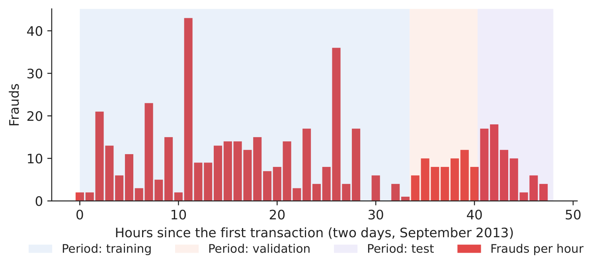
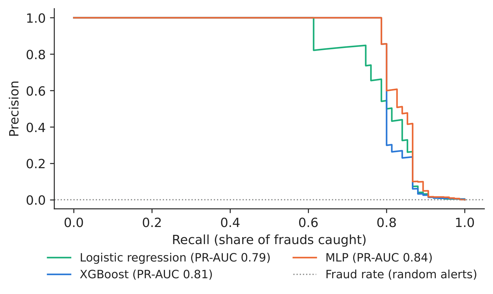
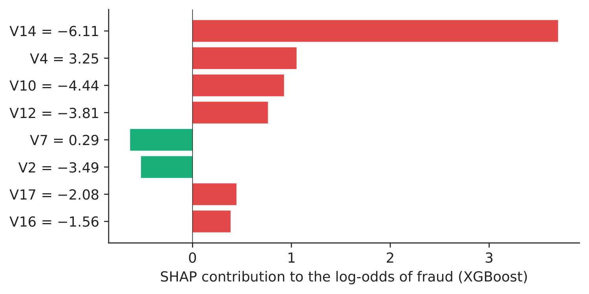
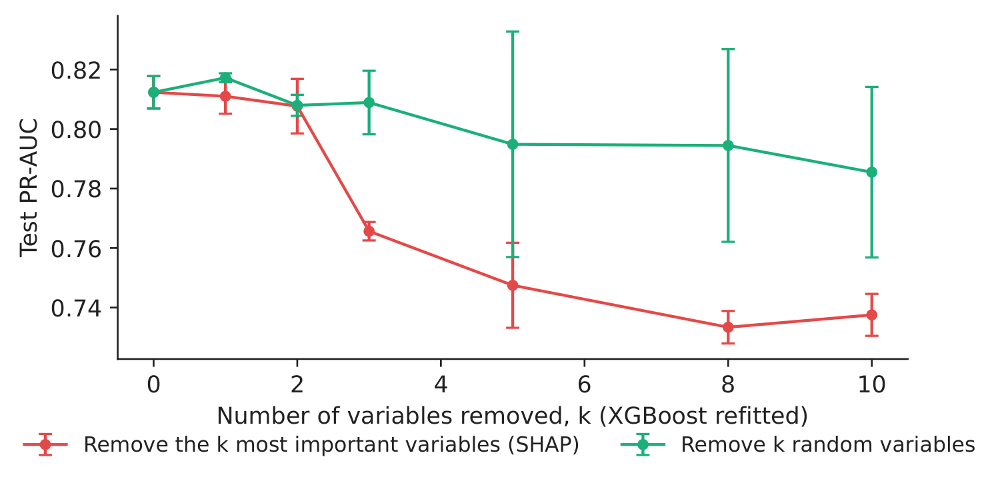
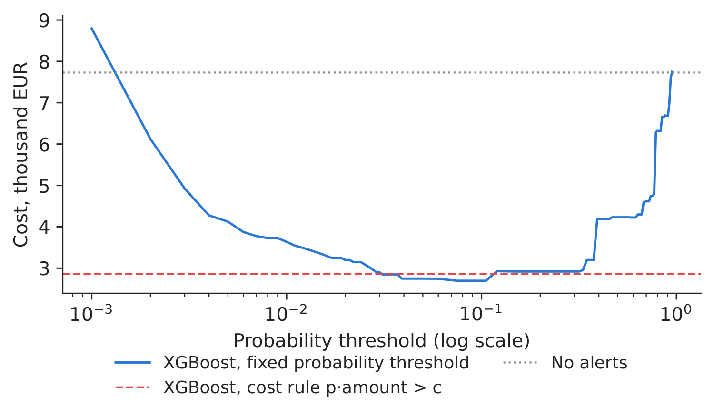
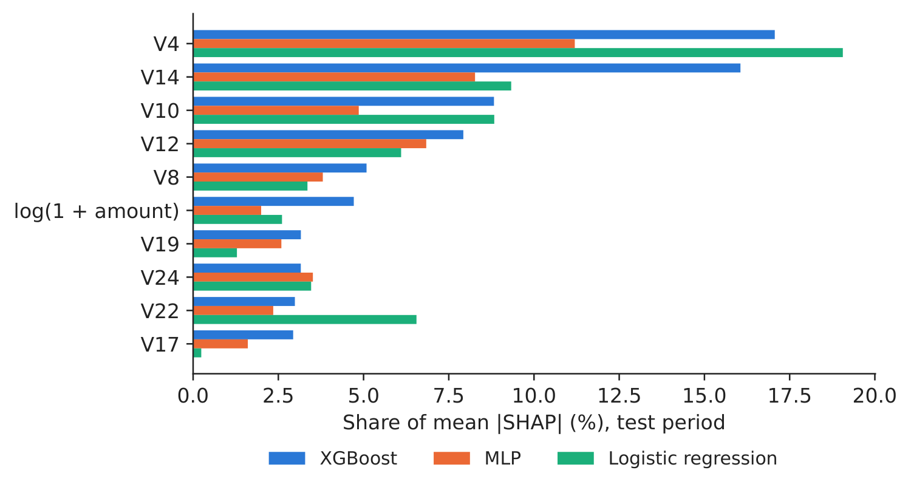

Case study 1 · Lecture 3
Explainable fraud detection — model choice, explanations and alert thresholds
Prof. dr. Daniel Traian PELE
Bucharest University of Economic Studies, Department of Statistics and Econometrics
Romanian Academy, Institute for Economic Forecasting
The paper
Diaconu, D. & Pele, D. T. (2026). Explainable AI in financial fraud detection: Evidence from the IEEE-CIS fraud dataset. Proceedings of the International Conference on Business Excellence, 20(1), 118–132. doi:10.2478/picbe-2026-0015
The business question
The head of fraud operations at a card issuer receives a model score for every payment. The team can review only a few hundred payments a day; each review costs analyst time and annoys a customer, each missed fraud costs the amount stolen. The risk committee and the supervisor ask two further questions before the model goes live: why is a payment flagged, and would a different model give the same reasons? The decisions are: which model to deploy (a simple logistic regression, gradient-boosted trees or a neural network), how to explain it, and when to raise an alert.
The reference paper
Question. How do tabular models and graph models differ, not only in accuracy but in what they can explain about fraud, and how can feature-level and network-level explanations be combined into one framework (p. 119, 121)?
Data. The IEEE-CIS (Institute of Electrical and Electronics Engineers, Computational Intelligence Society) fraud detection data: 590,540 e-commerce transactions, 20,663 frauds (3.50 %), 432 features (Table 1, p. 125); a random 70/30 split into training and validation (p. 122). For the graph model, transactions are linked to identity, device, address and e-mail-domain nodes, with reverse edges for two-way message passing (p. 125–126).
Method. Two gradient-boosting models, XGBoost (eXtreme Gradient Boosting) and CatBoost, against a heterogeneous GraphSAGE (graph sample and aggregate) network (eq. 1–5, p. 121–122). Explanations at two levels: SHAP (SHapley Additive exPlanations) values for the tabular models (eq. 6–7, p. 123), and, for the graph, edge-type ablation (remove one relation type, measure the loss of the area under the receiver operating characteristic curve, ROC-AUC, eq. 8) and hop ablation (keep only \(k\)-hop neighbourhoods, eq. 9, p. 123–124). Performance is reported with ROC-AUC, precision, recall and the F1-score at an optimal threshold (p. 123).
Main findings of the paper.
- XGBoost (1,000 trees, depth 10) reaches ROC-AUC 0.9763, precision 0.8955, recall 0.7509, F1 0.8169 at threshold 0.2055; CatBoost 0.9636, 0.8915, 0.7091 and 0.7899 (Table 2, p. 126–127).
- Global SHAP shows that fraud scores are driven by behavioural-consistency, identity and transaction-pattern variables, and the ranking is “largely consistent across the two models” (p. 128).
- GraphSAGE reaches ROC-AUC 0.8729 and adds relational explanations: removing the links to the id_31 and addr1 entities lowers the ROC-AUC by 0.0303 and 0.0255 (Table 3); without any neighbours (\(k=0\)) the ROC-AUC falls to 0.754, while first-order neighbours (\(k=1\)) restore it fully (Table 4, p. 129–130).
- Conclusion: explainable fraud detection should combine several model types, the boosting models for feature-level risk and the graph models for the relational structure of fraud (p. 131).
The method
Intuition behind the method
A fraud model ranks payments by risk; an explanation tells the analyst which characteristics of a payment pushed it up the list. If two very different models, trees and a neural network, point to the same characteristics, the explanation is about the data, not about one model's quirks. Removing the most important characteristics and refitting shows how much of the performance they really carry — the same logic as removing a relation type from the paper's graph.
Let \(y_i\in\{0,1\}\) mark a fraud and \(\mathbf x_i\in\mathbb R^{p}\) the \(p=29\) inputs of payment \(i\). Logistic regression: \(\Pr(y_i=1\mid\mathbf x_i)=\sigma(\beta_0+\boldsymbol\beta^\top\mathbf x_i)\), \(\sigma(z)=1/(1+e^{-z})\). Gradient-boosted trees (paper eq. 1–2): \(\hat y_i=\sum_{m=1}^{M}f_m(\mathbf x_i)\), each tree \(f_m\) fitted to minimise \(\sum_i l(y_i,\hat y_i)+\sum_m\Omega(f_m)\), with \(l\) the log-loss and \(\Omega(f)=\gamma T+\tfrac12\lambda\lVert\mathbf w\rVert^2\) penalising the number of leaves \(T\) and the leaf weights \(\mathbf w\). Multilayer perceptron (MLP): \(\mathbf h_1=\mathrm{ReLU}(\mathbf W_1\mathbf x+\mathbf b_1)\), \(\mathbf h_2=\mathrm{ReLU}(\mathbf W_2\mathbf h_1+\mathbf b_2)\), \(\hat\pi=\sigma(\mathbf w_3^\top\mathbf h_2+b_3)\), with 64 and 32 units, dropout 0.2 after each hidden layer, and loss \(-\frac1n\sum_i[y_i\log\hat\pi_i+(1-y_i)\log(1-\hat\pi_i)]+\lambda_w\lVert\boldsymbol\theta\rVert^2\) (weight decay \(\lambda_w=10^{-4}\), rectified linear unit ReLU\((z)=\max(0,z)\)); training stops when the validation score stops improving (early stopping).
Sampling correction. Our file keeps every fraud and a share \(\beta\) = 0.1000 of the legitimate payments. A score \(p_s\) learnt on this sample is mapped back to the population with \(p=\beta p_s/(\beta p_s-p_s+1)\) (Lecture 3), and every metric weights legitimate rows by \(1/\beta\). Metrics. Precision \(=TP/(TP+FP)\), recall \(=TP/(TP+FN)\) (\(TP\), \(FP\), \(FN\): true positives, false positives, false negatives); the area under the precision–recall curve, PR-AUC \(=\sum_k(R_k-R_{k-1})P_k\) over the ranked scores, is the headline metric for a rare event (a random score has PR-AUC equal to the fraud rate).
Explanations. SHAP writes a score as \(f(\mathbf x)=\phi_0+\sum_{j=1}^{p}\phi_j\) (paper eq. 6), with the Shapley value \(\phi_j=\sum_{S\subseteq F\setminus\{j\}}\frac{|S|!(p-|S|-1)!}{p!}\,[f_{S\cup\{j\}}(\mathbf x_{S\cup\{j\}})-f_S(\mathbf x_S)]\) (eq. 7), \(F\) the set of features and \(f_S\) the model using only the features in \(S\). For trees, TreeSHAP computes it exactly; for the MLP we use expected gradients, \(\phi_j=\mathbb{E}_{\mathbf x'\sim\mathcal B,\,\alpha\sim U(0,1)}\big[(x_j-x'_j)\,\partial f(\mathbf x'+\alpha(\mathbf x-\mathbf x'))/\partial x_j\big]\) with a background sample \(\mathcal B\) of training rows; for the logistic regression \(\phi_j=\beta_j(x_j-\bar x_j)\). Global importance is the mean \(|\phi_j|\); agreement between two models is the Spearman rank correlation of their importances. Ablation (analogue of eq. 8): \(\Delta_k=\text{PR-AUC}(F)-\text{PR-AUC}(F\setminus\text{top-}k)\), refitting the model without the \(k\) most important variables, against the same number of randomly chosen ones.
Decision rule. Reviewing a payment costs \(c\); not reviewing a fraud loses its amount \(A_i\). Reviewing is worth it when the expected loss exceeds the review cost: alert if \(\hat p_i\,A_i>c\).
In practice
Rank payments with the model, explain the top of the list with SHAP, check that a second model points to the same variables, and set the alert rule from your own review cost and the amount at risk, not from a fixed probability of 0.5.
Replication on the course data
Notebook C1_notebook_EN.ipynb: the credit-card fraud data of the course (Worldline and the Machine Learning Group of ULB, Université Libre de Bruxelles; European cardholders, two days of September 2013): all 492 frauds and a 10 % sample of the legitimate payments, 28,924 rows.
The 29 inputs are the 28 principal components V1–V28 released by the data owner and \(\log(1+\text{amount})\). The rows are split in time order: training (first 60 %, 360 frauds), validation (next 20 %, 57 frauds, used for early stopping), test (last 7.7 hours, 75 frauds among about 57,174 payments, fraud rate 0.131 %).
Every model is trained with five seeds (0–4). The graph layer of the paper needs entity keys (devices, addresses, e-mail domains) that these data do not contain; Case 3 applies graph models to a transaction graph.

Figure 1. Frauds per hour and the time-ordered split.
Source: ULB credit-card data (OpenML 1597); September 2013.

Figure 2. Precision–recall curves on the test period (mean score of five seeds).
Source: our computation; population weights.
Table 1. Test-period performance, mean of five seeds (sd = standard deviation across seeds); recall and precision when the top 0.5 % of payments are reviewed. Best value in bold.
| Model | ROC-AUC | PR-AUC | sd PR-AUC | Recall at 0.5 % | Precision at 0.5 % |
|---|---|---|---|---|---|
| Logistic regression | 0.982 | 0.789 | 0.000 | 0.867 | 0.220 |
| XGBoost | 0.983 | 0.815 | 0.005 | 0.859 | 0.219 |
| MLP | 0.980 | 0.837 | 0.004 | 0.867 | 0.220 |
Source: our computation. Paper (IEEE-CIS, random split): XGBoost ROC-AUC 0.9763, CatBoost 0.9636, GraphSAGE 0.8729 (Table 2, p. 127; p. 129).
What our data show: performance. All three models rank payments very well (ROC-AUC 0.982–0.983), so the headline is PR-AUC: XGBoost 0.815 (sd 0.005), MLP 0.837 (sd 0.004), logistic regression 0.789. A paired bootstrap on the test payments (2,000 resamples) gives a 95 % interval for MLP minus logistic regression of [0.004, 0.107], and for XGBoost minus MLP of [\(-\)0.048, 0.003]: the network improves on the benchmark, while XGBoost and the MLP are not distinguishable on 75 test frauds. Reviewing the top 0.5 % of payments catches about 0.86 of the frauds with any of the models.

Figure 3. Global SHAP importance of the top 10 variables of XGBoost, for the three models.
Source: our SHAP values; test period.

Figure 4. Why was this fraud flagged? Hour 42.9, amount 1,504.93 EUR, probability 0.769.
Source: our TreeSHAP values (XGBoost, seed 0).
What our data show: explanations. For XGBoost, the three leading variables are V4, V14 and V10; they carry 41.9 % of the mean \(|\)SHAP\(|\). The MLP's leading variable is V4; trees and network share 6 of their top 10 variables (Spearman rank correlation 0.53 over all 29 inputs; XGBoost versus logistic regression 0.57). As in the paper, where XGBoost and CatBoost agree on the main drivers, the leading variables are common to very different models, while the order of the weaker ones depends on the model — a reason to report the top of the ranking, not the full list. The local explanation (Figure 4) shows a large payment flagged mainly because of V14 and V4.

Figure 5. Ablation: test PR-AUC after removing \(k\) variables and refitting (mean \(\pm\) sd, three seeds).
Source: our computation (XGBoost).

Figure 6. Cost of the test period by alert rule: review cost \(c\) = 5 EUR, missed fraud = its amount.
Source: our computation (XGBoost).
Ablation. Removing the five most important variables and refitting lowers the test PR-AUC from 0.812 to 0.747 (\(\Delta_5\) = 0.065); removing five random variables costs only 0.017. The SHAP ranking therefore identifies variables that carry the signal, the same check as the paper's edge-type ablation, applied to feature groups instead of relation types.
Table 2. Alert policies on the test period (population scale): alerts reviewed, frauds and amounts caught, total cost (reviews plus missed amounts). Lowest cost in bold.
| Alert policy (test period) | Alerts | Frauds caught | EUR caught | Cost, thousand EUR |
|---|---|---|---|---|
| No model: no alerts | 0 | 0 | 0 | 7.73 |
| Logistic regression, threshold 0.5 | 58 | 48 | 3,672 | 4.35 |
| Logistic regression, cost rule \(p\cdot A>c\) | 93 | 23 | 5,277 | 2.92 |
| XGBoost, threshold 0.5 | 51 | 51 | 3,756 | 4.23 |
| XGBoost, cost rule \(p\cdot A>c\) | 84 | 24 | 5,286 | 2.86 |
| MLP, threshold 0.5 | 49 | 49 | 4,906 | 3.07 |
| MLP, cost rule \(p\cdot A>c\) | 83 | 23 | 5,277 | 2.87 |
Source: our computation; \(c\) = 5 EUR per review (assumption); mean probability of five seeds.
Decision number. Without alerts, the frauds of the test period cost 7.7 thousand EUR. A fixed threshold of 0.5 on the XGBoost probability reviews the clearest cases (51 frauds caught) and cuts the cost to 4.2 thousand. The cost rule \(\hat p_i A_i>c\) reviews about 84 payments, catches fewer frauds (24) but the largest ones (5.3 thousand EUR), and lowers the cost to 2.9 thousand EUR, a saving of 4.9 thousand EUR in 7.7 hours. The best fixed threshold found afterwards on the test data (0.075) would give 2.7 thousand EUR; the cost rule reaches nearly the same cost without looking at the test outcomes.
Discussion questions for managers
- XGBoost and the MLP are statistically tied on our data. Which one would you deploy, and what weight would you give to explainability, stability across seeds and maintenance cost?
- The variables V1–V28 are anonymised principal components. Is a SHAP explanation in terms of “V14” useful to an analyst or to a customer who asks why a payment was blocked? What would you need to make it useful?
- The cost rule catches fewer frauds but more euros. Is that acceptable for your company's reputation, for customers and for the supervisor?
- Fraudsters adapt. How often would you retrain the model, and how would you check that its explanations have not changed (Case 3)?
- The paper shows that links between transactions (shared devices, addresses, e-mail domains) carry fraud signal. Which links does your company record, and what would it take to build such a graph?
Limitations of the classroom replication
(i) Our data cover two days and 492 frauds, so the test period has only 75 frauds and the intervals are wide; the paper uses 590,540 transactions. (ii) The inputs are anonymised principal components, so explanations are statistical, not business variables — a feature that the paper also notes for IEEE-CIS (p. 130). (iii) Without entity keys, the graph layer of the paper (GraphSAGE, edge and hop ablation) is replaced by a feature ablation. (iv) The cost rule uses the transaction amount as the loss and a fixed review cost; chargebacks, recoveries and customer attrition are not modelled.
Summary of case 1
- QuestionWhich fraud model, which explanation, and when to raise an alert?
- DataULB card payments, September 2013; 492 frauds; time-ordered split.
- MethodLogistic regression, XGBoost, MLP (5 seeds); SHAP; ablation; cost rule.
- ResultPR-AUC 0.815 (XGBoost), 0.837 (MLP); top variables V4, V14, V10.
- DecisionAlert when probability \(\times\) amount \(>\) review cost.

Source: our SHAP values on the ULB credit-card data; test period (last 7.7 hours).
Abbreviations
| GraphSAGE | graph sample and aggregate |
|---|---|
| IEEE-CIS | Institute of Electrical and Electronics Engineers, Computational Intelligence Society |
| MLP | multilayer perceptron |
| PR-AUC | area under the precision–recall curve |
| ReLU | rectified linear unit |
| ROC-AUC | area under the receiver operating characteristic curve |
| SHAP | SHapley Additive exPlanations |
| TreeSHAP | SHAP for tree ensembles |
| ULB | Université Libre de Bruxelles |
The text, numbers, charts and tables of this page are those of the case brief; every number is computed by the case notebook on the course data.